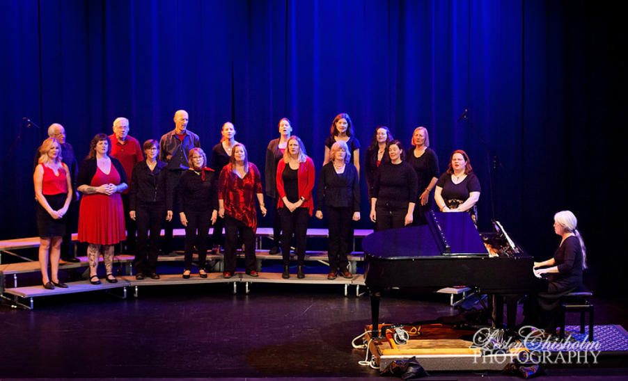
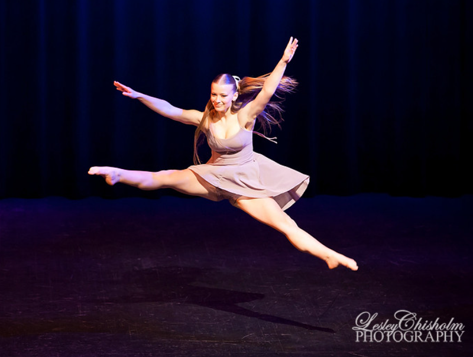

Welcome to Festival 2027
The Kootenay Festival of the Arts returns to Trail, BC for 2027. We welcome students and performers of all ages to participate in adjudicated workshops across music, dance, and speech disciplines.
Festival Moments

2025
2025Our History
Founded in 1930 as the Nelson Musical Festival Association, the Kootenay Festival of the Arts is one of the oldest performing arts festival traditions in British Columbia. What began as a joint effort between the Trail Veterans' Orchestra and the Nelson Symphony Orchestra has grown into a two-week celebration that has run almost every year since 1930, alternating between Nelson and Trail and inspiring generations of regional performers in piano, strings, voice, choral, dance, drama, and speech arts.